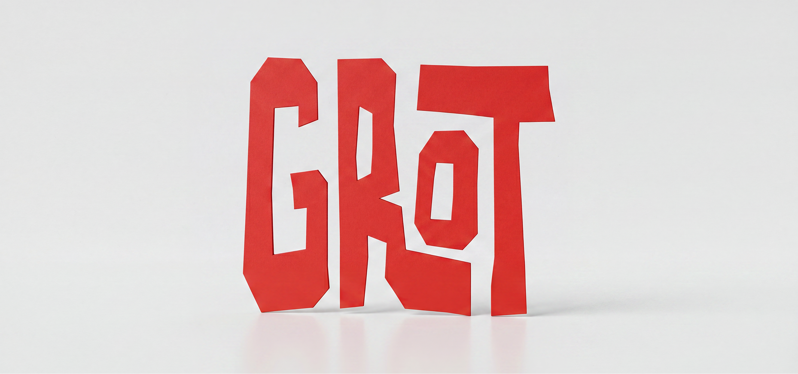
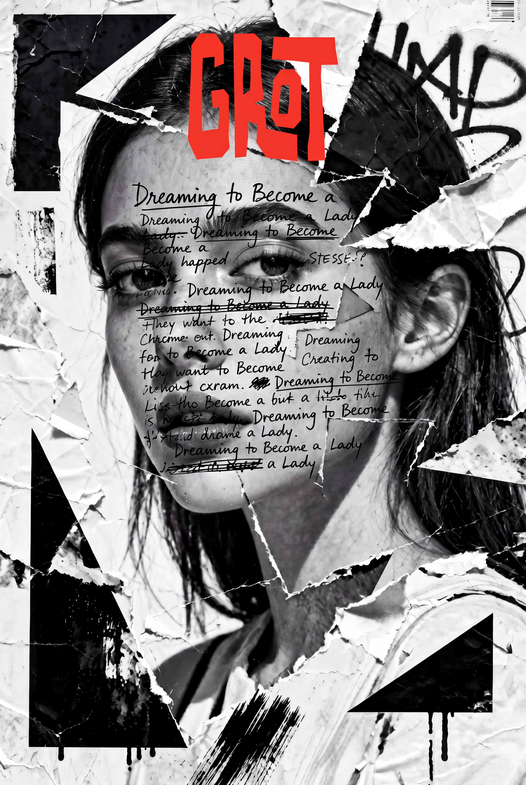
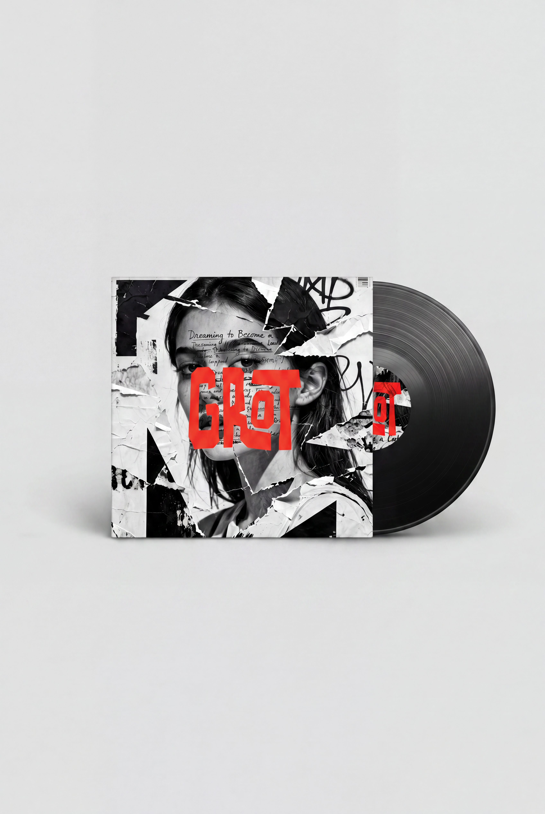
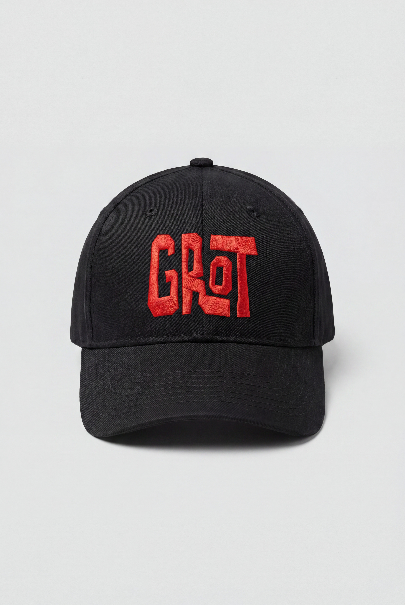

Grot
Material promocional para Grot, banda de rock formada na Coruña en 2017.

Grot é unha banda de rock formada na Coruña en 2017, integrada por Carlos Pena (voz e guitarra acústica), Jano García (guitarra eléctrica), Rubén Martínez (baixo) e Chenchu López (batería). Dreaming to Become a Lady foi a súa primeira maqueta, gravada por Aarón Bouzón en Cachisnamar Recording Studio no verán de 2017.
Para acompañar a publicación, deseñouse un cartel promocional e a portada para unha edición en vinilo que finalmente non chegou a materializarse.


